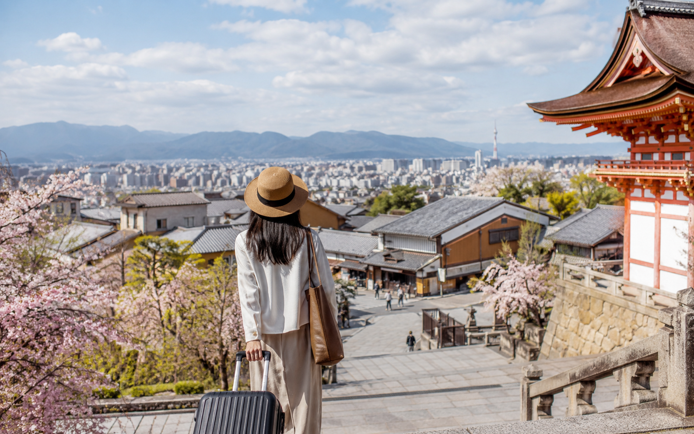
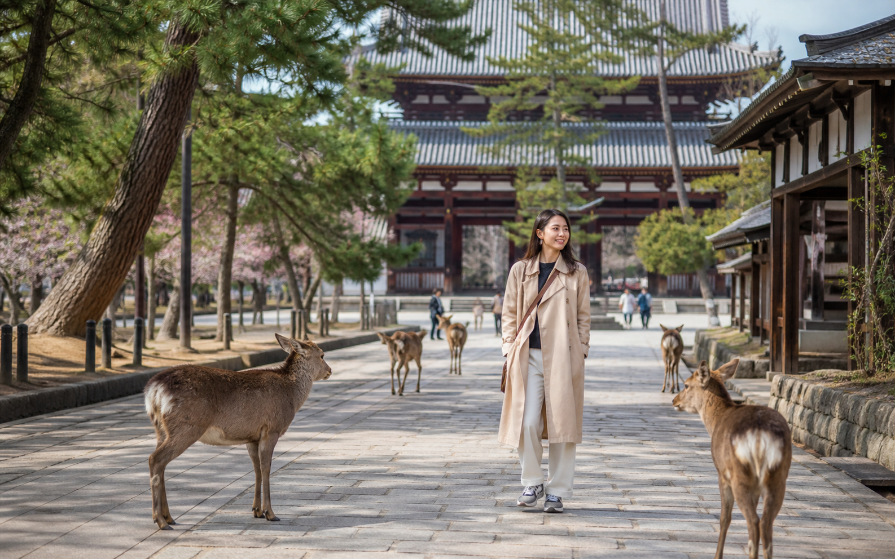
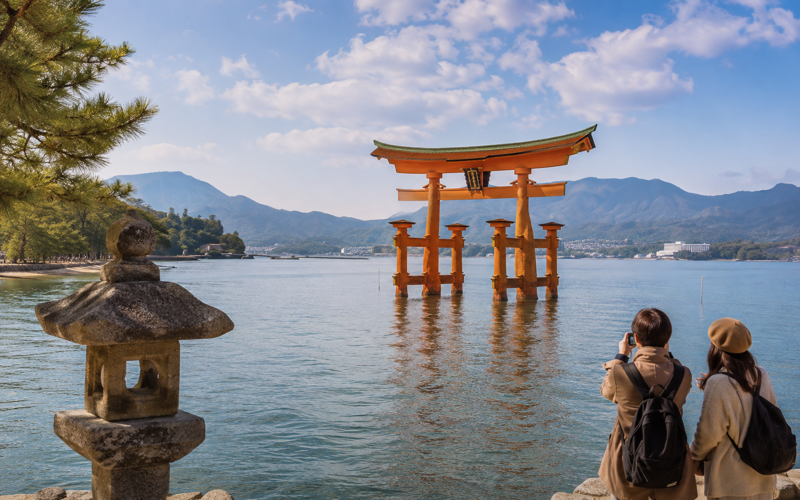

Japan 14-Day Itinerary for First-Time Visitors

Two weeks in Japan gives first-time visitors enough time to see more than the classic Tokyo, Kyoto, and Osaka route without changing hotels every other day. The extra time also lets you slowdown in Kyoto, give Nara its own day, spend two nights in Hiroshima, visit Miyajima properly, and still finish with several nights in Osaka.
For this route, I recommend Tokyo → Kyoto → Nara → Hiroshima → Miyajima → Osaka. Only Tokyo, Kyoto, Hiroshima, and Osaka are hotel bases. Nara and Miyajima work as day trips, which keeps the trip easier to manage while still giving you six distinct destinations.
This itinerary assumes 14 days and 13 nights in Japan. If your flight times give you an extra usable night, I would add it to Tokyo, Kyoto, or Osaka rather than introduce another city. If you are still deciding between 10 days and two weeks, How Many Days Do You Need in Japan? explains how the longer trip changes your pace.
Japan 14-Day Itinerary at a Glance
| Day | Sleep | Main Plan |
|---|---|---|
| Day 1 | Tokyo | Arrival + easy neighborhood evening |
| Day 2 | Tokyo | Asakusa , Ueno and eastern Tokyo |
| Day 3 | Tokyo | Meiji Jingu , Harajuku, Shibuya and Shinjuku |
| Day 4 | Tokyo | Flexible Tokyo day or optional Fuji/Hakone |
| Day 5 | Kyoto | Tokyo → Kyoto + downtown/ Gion |
| Day 6 | Kyoto | Fushimi Inari, Kiyomizudera and Higashiyama |
| Day 7 | Kyoto | Arashiyama + second Kyoto area |
| Day 8 | Kyoto | Nara day trip |
| Day 9 | Hiroshima | Kyoto → Hiroshima + Peace Memorial area |
| Day 10 | Hiroshima | Miyajima day trip |
| Day 11 | Osaka | Hiroshima → Osaka + easy evening |
| Day 12 | Osaka | Full Osaka sightseeing |
| Day 13 | Osaka | Flexible Osaka day, Himeji or Universal Studios |
| Day 14 | Departure | Easy morning + Kansai Airport |
Why This Two-Week Japan Route Works?
The main benefit of 14 days is not simply having four more days than the 10-day itinerary.
The longer trip changes the structure.
You can now:
- ✓Give Tokyo several full days
- ✓Spend three nights in Kyoto
- ✓Visit Nara without carrying luggage through the city
- ✓Add Hiroshima as a real overnight destination
- ✓Give Miyajima enough time
- ✓Stay in Osaka for several nights
- ✓Keep one flexible day near the end
That creates a broader trip without requiring five or six hotel bases.
I would rather use four well-placed bases than turn two weeks into a chain of one-night stays.
Your Four Hotel Bases
Tokyo: 4 Nights
Tokyo gets the first four nights, including arrival day.
This gives you enough time to see different sides of the city without making every Tokyo day extremely busy.
Kyoto: 4 Nights
Kyoto gets the transfer night plus three full days.
That is enough for major historic areas, Arashiyama, and a proper Nara day trip.
Hiroshima: 2 Nights
Hiroshima becomes the main base for both Hiroshima itself and Miyajima.
This is much easier than visiting Hiroshima as a rushed day trip from Kyoto or Osaka.
Osaka: 3 Nights
Osaka gives the trip a more relaxed finish.
You get one main sightseeing day plus another flexible day that can become more Osaka, Himeji, or Universal Studios Japan.
Best Arrival and Departure Airports
The cleanest setup is:
Fly into Tokyo → travel west → fly home from the Osaka/Kansai region
That lets the route move in one direction.
You avoid:
Osaka → Tokyo → airport
at the end of the trip.
Before booking flights, compare the total cost of:
- ✓Tokyo round trip
- ✓Multi-city ticket
- ✓Extra train fare
- ✓Final hotel night
- ✓Airport transfers
- ✓Extra travel time
A Tokyo round trip may still be cheaper, but the lowest airfare is not automatically the cheapest overall trip.
If you already have a round-trip Tokyo ticket, this itinerary can still work. You will just need to return to Tokyo before your international flight.
Day 1: Arrive in Tokyo and Settle In
Do not start the trip with a full sightseeing schedule.
After a long international flight, arrival can include:
- ✓Immigration
- ✓Baggage collection
- ✓Customs
- ✓Airport transport
- ✓Mobile data setup
- ✓Cash or payment setup
- ✓Hotel check-in
- ✓Jet lag
I would treat Day 1 as an orientation day.
After Reaching Your Hotel
Focus on simple things:
- ✓Check in or leave your luggage.
- ✓Learn the nearest useful station.
- ✓Confirm your mobile data works.
- ✓Get some yen if needed.
- ✓Find food close to the hotel.
Then take a light walk around the neighborhood.
If you stay in Shinjuku, Shibuya, Ueno, or another active area, you already have plenty nearby without crossing Tokyo.
Avoid booking anything expensive or difficult to change on the first evening.
Day 2: Asakusa, Ueno and Eastern Tokyo
Your first full day focuses on eastern Tokyo.
Morning: Asakusa
Start around Sensoji.
Allow time for:
- ✓Kaminarimon
- ✓Nakamise area
- ✓Sensoji
- ✓Nearby streets
Going earlier can make the area easier to enjoy before the busiest part of the day.
Lunch Around Asakusa
Stay nearby for lunch instead of traveling across Tokyo for one famous restaurant.
A good itinerary should reduce unnecessary movement.
Afternoon: Ueno
Continue to Ueno.
Depending on your interests, choose from:
- ✓Ueno Park
- ✓Museums
- ✓Ameyoko
- ✓Shopping
- ✓Cafes
You do not need to do every option.
Evening: Choose One Nearby Interest
You could continue to:
Akihabara for anime, gaming and electronics.
Tokyo Station/Marunouchi for a central-city evening.
Ginza for shopping.
Pick one.
The day works because the areas stay reasonably connected.
Day 3: Meiji Jingu, Harajuku, Shibuya and Shinjuku
Day 3 shows you a very different side of Tokyo.
Morning: Meiji Jingu
Start at Meiji Jingu and spend some time in the quieter shrine and forest area.
Late Morning: Harajuku
Continue toward Harajuku.
Explore whichever parts interest you most, such as:
- ✓Takeshita Street
- ✓Omotesando
- ✓Side streets
- ✓Cafes
- ✓Shops
Afternoon: Shibuya
Give Shibuya several hours.
Possible stops include:
- ✓Shibuya Crossing
- ✓Shopping
- ✓Cafes
- ✓Department stores
- ✓A booked observation deck
If you want a timed attraction, make that the main reservation rather than stacking several fixed bookings together.
Evening: Shinjuku
Finish the day in Shinjuku.
Use the evening for dinner, city streets, shopping, or a viewpoint.
If you stay in Shinjuku, the route becomes even easier because your day ends close to the hotel.
Day 4: Your Flexible Tokyo Day
This day is one reason a two-week itinerary feels better than a shorter route.
You do not need to rush out of Tokyo after only two full sightseeing days.
Choose one direction based on your interests.
Option 1: More Tokyo
Use the day for:
- ✓Tokyo Station
- ✓Marunouchi
- ✓Ginza
- ✓Akihabara
- ✓A museum
- ✓Shopping
- ✓A neighborhood you skipped
This is my default choice.
Option 2: Mount Fuji or Hakone Day Trip
Choose this only if seeing the Fuji area is one of your main priorities.
It will use most of the day, so do not expect another full Tokyo itinerary afterward.
I prefer making Hakone or Fuji optional rather than adding another required hotel base.
Option 3: Slower Day
After three busy days, you may prefer:
- ✓A late start
- ✓Shopping
- ✓One booked experience
- ✓Cafes
- ✓A quieter neighborhood
- ✓Laundry or practical tasks
This is not wasted time.
A slower day can make the second half of a two-week trip much easier.
Prepare for Kyoto Before Bed
Day 5 is your first major city transfer.
Before sleeping:
- ✓Pack most of your luggage
- ✓Confirm the Shinkansen journey
- ✓Save your Kyoto hotel details
- ✓Check large-baggage needs
- ✓Keep important documents easy to reach
The goal is to leave Tokyo without spending the whole morning reorganizing luggage.
Day 5: Travel From Tokyo to Kyoto
Day 5 is the first major transfer day.
I would leave Tokyo in the morning and aim to reach Kyoto with enough time for a useful afternoon. The Tokaido Shinkansen makes this transfer straightforward, but the day still includes check-out, station time, luggage, and hotel arrival.
Before leaving Tokyo:
- ✓Confirm your train
- ✓Keep tickets or booking details ready
- ✓Save your Kyoto hotel address
- ✓Check large-luggage needs
- ✓Keep important items in a smaller bag
If your suitcase is difficult to manage, consider forwarding it rather than carrying it through every station.
Arriving in Kyoto
Go to your hotel first.
If check-in is not open yet, leave your luggage where permitted and start the afternoon without it.
I would keep the first Kyoto day fairly light.
Afternoon: Downtown Kyoto
A practical first afternoon can include:
- ✓Nishiki Market area
- ✓Teramachi
- ✓Shinkyogoku
- ✓Kamo River
- ✓Central shopping streets
Choose based on your hotel location.
This part of the day should help you get familiar with Kyoto rather than force several temples into a transfer afternoon.
Evening: Gion and Pontocho
Later, spend time around Gion or Pontocho.
This works well for:
- ✓Dinner
- ✓Historic streets
- ✓Evening walks
- ✓A slower end to the day
Follow local signs and photography rules, especially in residential areas.
Day 6: Fushimi Inari, Kiyomizudera and Higashiyama
Day 6 is the main historic Kyoto day.
The key is keeping the route geographically tight.
Early Morning: Fushimi Inari
Start at Fushimi Inari.
You do not need to complete the full mountain trail unless hiking is one of your main goals.
For this itinerary, I would spend enough time to enjoy the shrine and part of the torii route, then continue.
Late Morning: Move Toward Eastern Kyoto
Head toward the Higashiyama side of Kyoto.
This area works better as one connected walking route than as separate attractions scattered across the city.
Kiyomizudera
Make Kiyomizudera one of the main stops.
Allow time for:
- ✓The temple
- ✓Sannenzaka
- ✓Ninenzaka
- ✓Yasaka Pagoda area
- ✓Nearby historic streets
Do not rush immediately to another distant part of Kyoto.
Afternoon: Yasaka Shrine and Gion
Continue toward Yasaka Shrine and Gion.
If you already walked through Gion on Day 5, use this part of the afternoon for a slower meal, cafe, or nearby area instead.
Day 7: Arashiyama and a Second Kyoto Area
Day 7 gives you another full Kyoto day.
This is where the 14-day route starts to feel much less rushed than a shorter trip.
Morning: Arashiyama
Start early.
Depending on your interests, spend time around:
- ✓Bamboo grove area
- ✓Tenryuji
- ✓River area
- ✓Local streets
Do not treat the bamboo grove as the whole destination.
The wider area is what makes the visit worthwhile.
Afternoon: Choose One Kyoto Area
Pick one direction:
Option 1: Northern Kyoto
Useful if you want another major temple area.
Option 2: Philosopher's Path
Better for a slower walking afternoon.
Option 3: Downtown Kyoto
Good for food, shopping, and less demanding sightseeing.
Option 4: Return to Higashiyama
Useful if Day 6 felt too full.
Choose one.
The point of a longer trip is not to fill every hour.
Day 8: Nara Day Trip From Kyoto

Unlike the 10-day itinerary, I would give Nara a proper day here.
You do not need to carry luggage or continue to another hotel afterward.
That makes the day much easier.
Morning: Travel to Nara
Leave Kyoto in the morning.
Once you arrive, focus on the central park and temple area rather than trying to cover all of Nara.
Main Stops
A simple route can include:
- ✓Nara Park
- ✓Todaiji
- ✓Nearby historic streets
- ✓One selected garden or temple
That is enough for a first visit.
Lunch in Nara
Stay in Nara for lunch.
Do not rush back to Kyoto just because you have already seen the most famous sight.
The extra time is one of the benefits of the 14-day route.
Afternoon: Slow Down
Use the afternoon for more walking, a garden, another temple, or simply a slower return through the park area.
Then travel back to Kyoto.
Keep the evening light.
Why Nara Works Better Here Than in the 10-Day Route
In our 10-day itinerary, Nara was part of the transfer from Kyoto to Osaka.
That saved time.
In two weeks, we do not need to squeeze the trip that tightly.
Giving Nara its own day means:
- ✓No luggage problem
- ✓No hotel check-in afterward
- ✓More time in Nara
- ✓A less tiring pace
That is exactly how the longer itinerary should improve on the shorter one.
Day 9: Travel From Kyoto to Hiroshima
Day 9 is the next major city transfer.
I would leave Kyoto in the morning and head to Hiroshima.
Once again, the day should not be planned like a full sightseeing day from sunrise.
Arriving in Hiroshima
Go to the hotel first and leave your luggage.
Then focus the rest of the day on Hiroshima itself.
Afternoon: Peace Memorial Park Area
A first visit should give enough time to the main Peace Memorial area.
Possible stops include:
- ✓Peace Memorial Park
- ✓Atomic Bomb Dome
- ✓Peace Memorial Museum
- ✓Riverside areas
This is not the part of the trip I would rush.
Allow enough time for the museum and for a quieter pace afterward.
Evening in Hiroshima
Keep the evening simple.
Explore nearby streets and have dinner.
Hiroshima-style okonomiyaki is one local food many visitors choose to try here.
You do not need another major attraction after a full afternoon around the Peace Memorial area.
Why Hiroshima Deserves an Overnight Stay
It can technically be visited as a long day trip from another city.
I would not recommend that for this 14-day route.
Staying overnight gives you:
- ✓More time in the city
- ✓Less pressure around the museum
- ✓Easier access to Miyajima the next day
- ✓Fewer rushed train connections
That makes Hiroshima feel like a real part of the trip rather than a box to check.
Day 10: Miyajima Day Trip

Day 10 is for Miyajima.
Because you are already staying in Hiroshima, this works naturally as a day trip without another hotel move.
Morning: Travel to Miyajima
Leave reasonably early.
Once on the island, move at a slower pace than you would on a city sightseeing day.
Main Experiences
A first visit can focus on:
- ✓Itsukushima Shrine
- ✓The waterfront
- ✓Historic streets
- ✓Local food
- ✓Scenic walking areas
Depending on time and energy, you can add another viewpoint or temple.
Do You Need to Stay Overnight on Miyajima?
Not for this itinerary.
An overnight stay can be excellent, but it would create another hotel base.
For a first two-week route, I prefer staying in Hiroshima and visiting Miyajima as a day trip.
That keeps the trip simpler.
Check Tides if the Torii Gate Matters to You
The famous waterfront views change with the tide.
If seeing the torii gate at a specific water level matters to you, check the tide schedule before the day trip.
Do not plan the whole day around one photo, but it is worth knowing what to expect.
Evening: Return to Hiroshima
Return to Hiroshima and keep the evening relaxed.
By this point, you have already covered Tokyo, Kyoto, Nara, Hiroshima, and Miyajima.
The final part of the trip should now slow down in Osaka rather than adding another major region.
Day 11: Travel From Hiroshima to Osaka
Day 11 is the final major hotel transfer.
I would leave Hiroshima in the morning and continue to Osaka. Once you reach Osaka, go to the hotel first, leave your luggage, and keep the rest of the day fairly easy.
This is not a day to add another long side trip.
Afternoon: Namba or Shinsaibashi
Use the afternoon to get familiar with the area around your hotel.
Good options include:
- ✓Namba
- ✓Shinsaibashi
- ✓Nearby shopping streets
- ✓Cafes
- ✓Local food areas
If you are staying near Umeda instead, explore that part of the city.
Evening: Dotonbori
Finish the day around Dotonbori.
This is a good place for:
- ✓Dinner
- ✓Street food
- ✓Evening lights
- ✓Walking
- ✓Shopping
Keep it flexible rather than booking several fixed restaurants or attractions.
Day 12: Full Osaka Sightseeing Day
Day 12 is your main Osaka day.
I would split it into one daytime area and one evening area rather than cross the city repeatedly.
Morning: Choose One Main Area
You could start with:
Osaka Castle area if history interests you.
or
Umeda if you prefer city views, shopping, and a modern urban feel.
Pick one.
Afternoon: Central Osaka
Continue toward Namba or Shinsaibashi if you did not spend much time there on Day 11.
Use the afternoon for:
- ✓Shopping
- ✓Cafes
- ✓Food
- ✓Local streets
- ✓One selected attraction
Evening: Food and Nightlife
Return to Dotonbori, Namba, or another area you enjoyed.
Osaka works well when you leave enough free time for food rather than turning the whole city into a sightseeing checklist.
Day 13: Choose Your Final Full-Day Option
I would keep Day 13 flexible on purpose.
After nearly two weeks of travel, your interests and energy may be different from what you expected before arrival.
Choose one of these options.
Option 1: More Osaka
This is my default choice if you want a slower finish.
Use the day for:
- ✓Neighborhoods you skipped
- ✓Shopping
- ✓Food
- ✓Cafes
- ✓One or two attractions
- ✓Rest
A free day near the end can make the whole trip feel better.
Option 2: Himeji Day Trip
Choose Himeji if Himeji Castle is one of your main interests.
It works well as a day trip from Osaka without another hotel move.
Keep the day focused on Himeji rather than trying to add another city afterward.
Option 3: Universal Studios Japan
Choose this only if the theme park matters enough to take most of the day.
If you go, make it the main plan.
Do not try to combine a full theme park day with major Osaka sightseeing.
Option 4: Keep It as a Buffer Day
A buffer day can absorb:
- ✓Bad weather earlier in the trip
- ✓A missed attraction
- ✓Shopping
- ✓Laundry
- ✓Tiredness
- ✓A place you discovered after arrival
This is one of the biggest benefits of having 14 days instead of 10.
Day 14: Easy Morning and Departure
Your final day should stay simple.
If you are flying from Kansai International Airport, allow enough time for:
- ✓Hotel check-out
- ✓Airport transport
- ✓Airline check-in
- ✓Security
- ✓Immigration procedures if required
Use the morning only for something close to the hotel.
Good options might include:
- ✓Breakfast
- ✓Last-minute shopping
- ✓A short walk
- ✓One nearby attraction
Do not cross Osaka for one final sight if it creates airport stress.
If You Are Flying Home From Tokyo
If your international ticket is round trip from Tokyo, you need to change the final part of the itinerary.
I would usually return to Tokyo on Day 13 and sleep there before the flight.
Another option is to reduce Osaka by one night.
I would not recommend:
Osaka → Tokyo → airport → international flight
on a tight same-day schedule.
A two-week trip gives you enough time to build a safer ending.
What I Would Not Add to This 14-Day Route
Two weeks can fit a lot, but I would still avoid turning the trip into a chain of hotel changes.
I would not automatically add:
- ✓Kanazawa
- ✓Takayama
- ✓Hokkaido
- ✓Nagoya
- ✓Another overnight in Hakone
- ✓Several Fuji-area stops
- ✓Multiple one-night stays
These places are better candidates for the Japan 21-Day Itinerary for First-Time Visitors.
The 14-day route already gives you six destinations through only four hotel bases.
That is enough.
Should You Add Hakone or Mount Fuji?
Yes, if it matters more to you than a third Tokyo day.
The easiest place to add it is Day 4.
You could replace the flexible Tokyo day with a Fuji or Hakone trip.
I would not add another overnight by default.
That keeps the route from becoming:
Tokyo → Hakone → Kyoto → Hiroshima → Osaka
with another hotel change.
How This 14-Day Route Differs From the 10-Day Route
The difference should be meaningful.
10-Day Route
- ✓Tokyo
- ✓Kyoto
- ✓Nara
- ✓Osaka
- ✓Three hotel bases
14-Day Route
- ✓Tokyo
- ✓Kyoto
- ✓Nara
- ✓Hiroshima
- ✓Miyajima
- ✓Osaka
- ✓Four hotel bases
The longer trip also gives:
- ✓Nara its own day
- ✓Hiroshima two nights
- ✓Miyajima proper time
- ✓More Osaka flexibility
- ✓One buffer or optional day
This is not the 10-day itinerary with four filler days attached.
How Much Should You Budget for 14 Days?
A rough in-country planning range is:
Budget traveler: around ¥170,000–¥260,000 per person
Mid-range traveler: around ¥290,000–¥440,000 per person
International flights are separate.
Your actual cost depends on:
- ✓Hotel level
- ✓Season
- ✓Train journeys
- ✓Food
- ✓Attractions
- ✓Shopping
Use Japan Trip Cost: Budget for 7, 10 and 14 Days for the full breakdown.
Do You Need the JR Pass?
Not automatically.
This route includes more long-distance rail than the 7- or 10-day itinerary, so a pass may deserve closer comparison.
But I would still price the actual journeys first.
Then compare them with the current pass cost and any regional alternatives.
Use Japan Rail Pass: Is the JR Pass Worth It? before buying.
How Should You Handle Luggage?
With four hotel bases, luggage planning matters more than it did on the shorter routes.
I would pay special attention to:
- ✓Tokyo → Kyoto
- ✓Kyoto → Hiroshima
- ✓Hiroshima → Osaka
If your suitcase is large, forwarding it can make one or more transfers easier.
For Miyajima and Nara, leave the main suitcase at your hotel and travel with a small day bag.
Common Mistakes With a 14-Day Japan Itinerary
Adding Too Many Hotel Bases
More days do not mean you need more check-ins.
Making Hiroshima a Day Trip
Two nights gives the city and Miyajima a better pace.
Adding Nara Between Two Hotel Moves
You have enough time to visit it properly from Kyoto.
Filling Day 13 Just Because It Is Free
A buffer day can be more useful than another distant attraction.
Adding Hakone Without Removing Something
If Fuji matters, replace Day 4 rather than stacking it on top.
Returning to Tokyo at the Last Minute
Plan the departure airport early.
How to Adjust the Route
If You Want More Tokyo
Keep Day 4 in Tokyo and skip the Fuji/Hakone option.
If You Want More Kyoto
Use Day 8 for Kyoto and skip Nara.
If You Want More Osaka
Skip Himeji and keep Day 13 in the city.
If Hiroshima Is Not a Priority
You could use those two nights for a different region, but then the route becomes a different 14-day itinerary and should be planned carefully.
If You Want Mount Fuji
Use Day 4 as the Fuji/Hakone day.
Use RoamPlans to Test the Route
Use the Travel Itinerary Builder to put these 14 days into your actual travel dates.
Then use the Trip Cost Estimator to compare:
- ✓Hiroshima included vs skipped
- ✓Himeji vs extra Osaka
- ✓Different hotel levels
- ✓Fuji day trip vs full Tokyo day
This helps you see whether a more ambitious version still fits your budget and pace.
Frequently Asked Questions
Yes. Two weeks is one of the best trip lengths for a first visit because it gives enough time for several cities without constant hotel changes.
I recommend Tokyo → Kyoto → Nara → Hiroshima → Miyajima → Osaka, using Tokyo, Kyoto, Hiroshima, and Osaka as the hotel bases.
Four nights works well, including the arrival day.
Four nights gives you the transfer afternoon, two full Kyoto days, and a Nara day trip.
Yes. Two weeks gives enough time to add Hiroshima without rushing the Tokyo-Kyoto-Osaka route.
You can, but I would keep Hiroshima as the base for this first-time itinerary to avoid another hotel change.
Yes, especially on a 14-day trip where you do not need to squeeze it into a transfer day.
Only if Mount Fuji or an onsen experience is a major priority. Replace Day 4 rather than adding another hotel base.
Maybe, but do not assume. Price the actual route first and compare it with current pass options.
No, as long as you keep only four hotel bases and leave Day 13 flexible.
Final Thoughts
A two-week Japan trip gives first-time visitors enough time to move beyond the basic Golden Route without making the itinerary harder. Tokyo, Kyoto, Nara, Hiroshima, Miyajima, and Osaka fit together well because the route keeps hotel changes limited and moves west in a logical order. Use the extra days to improve the pace rather than simply collect more destinations.